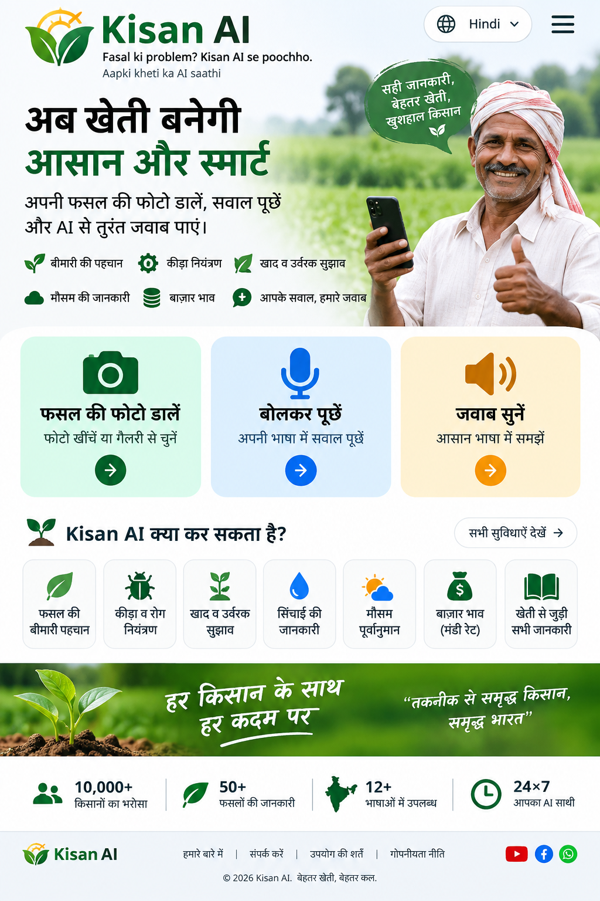

Apni fasal ki photo upload karein, apni bhasha mein sawal poochhein aur aasaan jawab paayen.

Photo upload karke crop problem ka preliminary AI analysis.
Visible symptoms ke basis par possible causes aur next checks.
Paani, khaad, crop stage aur basic management guidance.
Photo upload karke apni problem batayein. Kisan AI aapko preliminary AI-assisted guidance dega.
Abhi koi photo select nahi hui.
Crop:
Possible issue: Photo aur symptoms ke basis par kuch possibilities ho sakti hain. Exact diagnosis ke liye clear photo aur additional details zaroori hain.
Next step: Patton ke front/back ka clear photo, problem kitne din se hai, aur crop ki age/stage batayein.